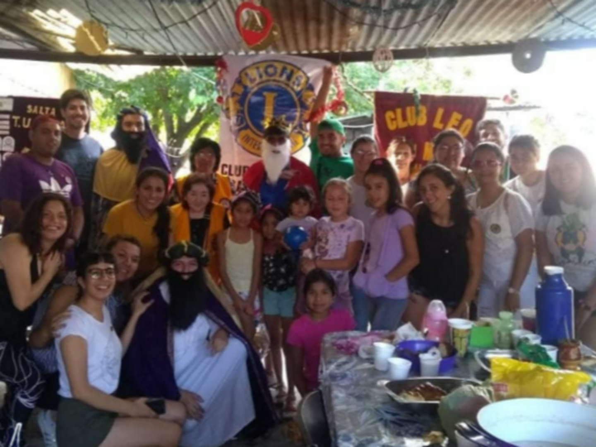

Más de nuestras actividades:

Servicio del día de Reyes
Visita en Cerrillos a un merendero y repartimos regalos a los niños en la plaza principal.
Ropero Solidario
Realización de un ropero solidario en Barrio Villa Floresta. Los vecinos pudieron llevarse todo lo que necesitaban.
Reuniones Oficiales
Para organizar nuestros servicios realizamos reuniones con un protocolo heredado del Club de Leones.